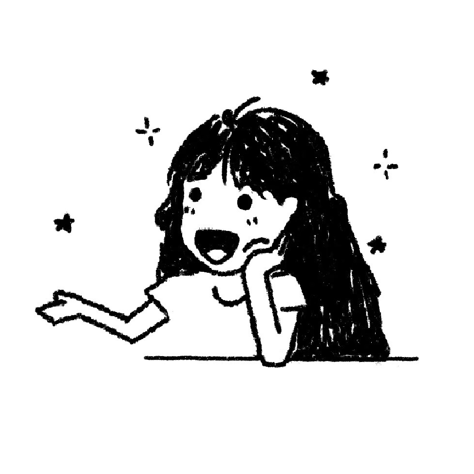

graphics software engineer in austin, tx

Hi, I'm Jeesoo — a graphics software engineer building tools that enable artists to tell more beautiful and immersive visual stories.
I spent 5+ years at IBM watsonx shipping large-scale cloud-based generative AI, but computer graphics was always the thing that kept me up at night. In 2024, I left to pursue it full-time — I'm currently finishing my MS in Computer Science at Georgia Tech, specializing in Computer Graphics (graduating May 2026).
My focus is real-time rendering. I've been working hands-on with signed distance fields, neural radiance fields, GLSL shader programming, and GPU-accelerated physics simulation. I'm a programmer by craft and a creative at heart, and I'm most excited about the intersection of the two — building the tools and systems that make rich, expressive visuals possible at interactive speeds.
When I'm not writing shaders, I'm probably digging through vinyl crates, obsessing over a typeface, dialing in a coffee recipe, or hanging out with my wonderful cat Maple.
I'm currently exploring what's next! If your team is doing cool things in graphics, I'd love to chat about it.